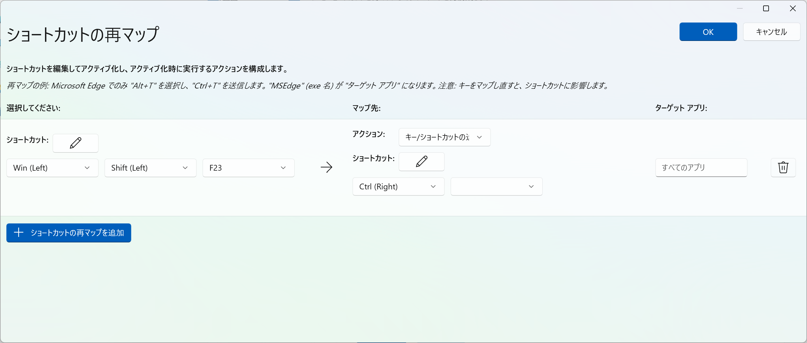

はじめに
最近のWindowsノートPCのキーボードには、Copilotキーが搭載されていることがあります。キーボード下段の右側あたりに配置されていることが多いです。
このキーを押すと、Windows Copilot（AIアシスタント）が起動するのですが、コードを書いていて右手でCtrl-EnterCtrl-Enterをしたいのにできない…ということが頻発します。
本記事では、MicrosoftのPowerToysに搭載されているKeyboard Managerを使って、CopilotキーをCtrlキーに置き換える方法を紹介します。
- Windows 11
- PowerToys（インストール方法は後述）
PowerToysとは
PowerToysは、Microsoftが公式に提供しているWindows向けのユーティリティツール集です。キーボードのカスタマイズ、ウィンドウ管理、ファイル一括リネームなど、Windowsをもっと便利に使うための多彩な機能が詰まっています1。
今回はその中のKeyboard Managerという機能を使います。これは任意のキーを別のキーに割り当て直すことができる機能です。
PowerToysのインストール
PowerToysはMicrosoft Storeからインストールできます。
- スタートメニューを開き、Microsoft Storeを検索して起動する
- 検索バーに「PowerToys」と入力する
- 「Microsoft PowerToys」を選択してインストールする
または、以下のコマンドをPowerShellやコマンドプロンプトから実行してもインストールできます2。
winget install Microsoft.PowerToysキーの置き換え手順
1. PowerToysを起動する
インストール後、スタートメニューからPowerToysを検索して起動します。タスクバーのシステムトレイ（通知領域）にアイコンが表示されている場合は、そこからも開けます。
2. Keyboard Managerを開く
PowerToysのホーム画面左サイドバーから、Keyboard Managerを選択します（「入出力」のカテゴリ内にあります）。
3. 「ショートカットの再マップ」を設定する
Keyboard Managerの画面で、「ショートカットの再マップ」をクリックします。
4. CopilotキーをCtrlキーに割り当てる
「ショートカットの再マップ」ダイアログが開いたら、以下の手順で設定します。
- 左側のをクリックする
- 実際にCopilotキーを押し、Win (Left) + Shift(Left) + F23と表示されることを確認する
- 内部的にはCopilotキーはこのように認識されています。
- 真ん中の列の1番下にあるドロップダウンからCtrl (Right)を選択する
- 右上の「OK」をクリックして保存する

5. 動作を確認する
設定後、メモ帳などを開いてCopilotキー + Cでコピー、Copilotキー + Vでペーストができるか試してみてください。Ctrlキーとして機能していれば成功です。
PowerToysが起動している間だけキーの再マップが有効になります。PowerToysはデフォルトでWindows起動時に自動起動するよう設定されているので、通常は意識しなくて大丈夫です。
自動起動の設定は、PowerToysの全般タブ > 起動時に実行で確認・変更できます。
まとめ
今回紹介した方法を使えば、CopilotキーをCtrlキーとして使えるようになります。これで右手でCtrl-EnterCtrl-Enterができるようになり、コードのレビュー中、左手で頬杖をつきながらコードを実行できるようになります😊
コードを書くときのストレスが減るはずです！是非お試しあれ。